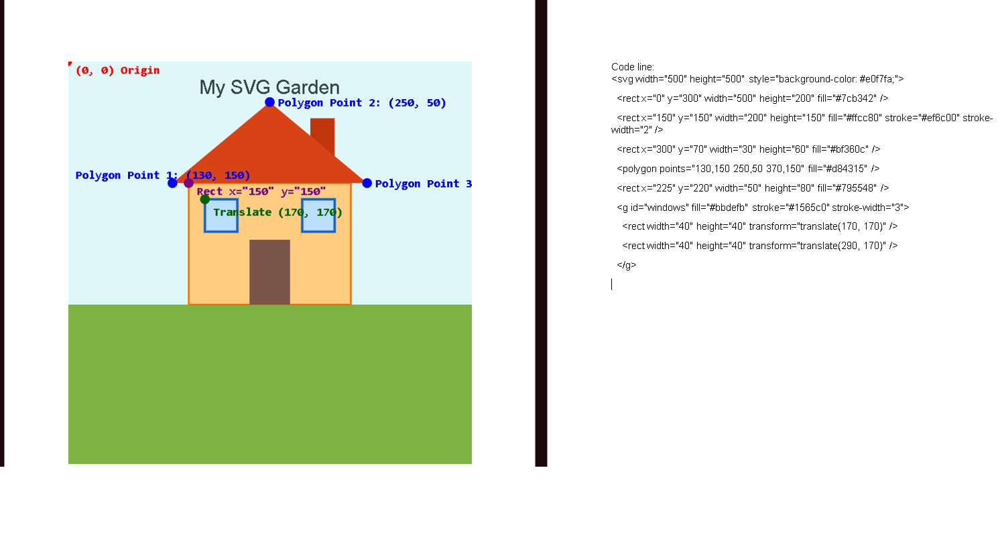

<svg width="500" height="500" style="background-color: #e0f7fa;">
  <rect x="0" y="300" width="500" height="200" fill="#7cb342" />
  
  

  <rect x="150" y="150" width="200" height="150" fill="#ffcc80" stroke="#ef6c00" stroke-width="2" />
  
  <rect x="300" y="70" width="30" height="60" fill="#bf360c" />
  
  <polygon points="130,150 250,50 370,150" fill="#d84315" />

  <rect x="225" y="220" width="50" height="80" fill="#795548" />

  <g id="windows" fill="#bbdefb" stroke="#1565c0" stroke-width="3">
    <rect width="40" height="40" transform="translate(170, 170)" />
    <rect width="40" height="40" transform="translate(290, 170)" />
  </g>

  <text x="250" y="40" font-family="sans-serif" font-size="24" fill="#37474f" text-anchor="middle">My SVG Garden</text>
</svg>

<h2>Annotated Coordinate System</h2>
